- 주제: 사과 외관 이미지를 바탕으로 품질 상태를 검출하는 농업 자동화 비전 데모
- 전반부: 적용 배경, 사용 시나리오, 모델 비교, LabelImg 기반 라벨링 절차
- 후반부: Kaggle 데이터 준비, Anaconda 학습, ONNX/TFLite/Vela, 보드 추론 및 화면 표시
- 보고 결과: 테스트 사례 기준 약 92% 정확도(272/296)
| 대목차 | HTML 반영 내용 |
|---|---|
| 사례 소개 | 프로젝트 요약, 사용 시나리오, 결과 |
| 모델 비교 | 모델 크기/속도, 훈련 효율, 적용 분야 |
| LabelImg | 설치, 실행, 라벨링 단계 |
| PC 학습 | 하드웨어, Kaggle 데이터, Anaconda, YOLOX, ONNX, Vela |
| 보드 추론 | System Initialization, Capture, Inference, Post-Processing, Display |
| DEMO | 링크 반영 |
머신러닝을 이용해 M55M1 임베디드 플랫폼에서 사과 품질 인식을 구현하는 가능성과 적용성을 검토한다고 설명합니다. 대상은 농업 자동화 검사 시스템이며, M55M1의 처리 성능과 저전력 특성을 활용해 생산 라인에서 실시간 품질 분류를 수행하는 것이 목표입니다.
핵심은 사람이 눈으로 선별하던 공정을 카메라와 객체 검출 모델로 자동화해 표준화, 속도, 운영 효율을 동시에 확보하는 것입니다.
- 표준화: 동일 기준으로 사과 품질을 분류해 사람마다 다른 판단 편차를 줄입니다.
- 고효율: 대량 생산 라인에서도 빠르게 검사해야 합니다.
- 적용 시나리오: 선별 및 포장 생산선에서 외관을 검사한 뒤 크기와 품질에 따라 자동 분류합니다.
박스로 표시된 영역을 사과로 인식하고 즉시 품질을 구분할 수 있다고 설명합니다. M55M1 보드 테스트 결과 정확도는 92%이며, 총 296개 테스트 중 272개를 올바르게 검출했다고 기록합니다. 이를 위해 모델 양자화와 경량화가 함께 적용되었습니다.
| 항목 | 내용 |
|---|---|
| 적용 분야 | 농산물 선별 및 자동 분류 |
| 모델 계열 | YOLOX-Nano 중심 비교 |
| 데이터 준비 | Kaggle 이미지 + LabelImg 라벨링 |
| 배포 방식 | M55M1 보드에서 카메라 추론 |
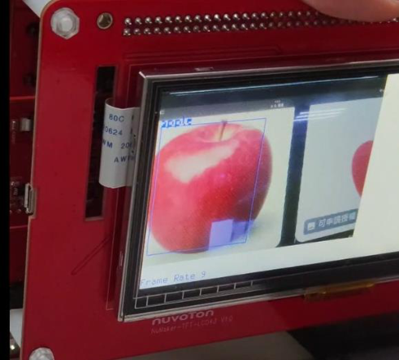
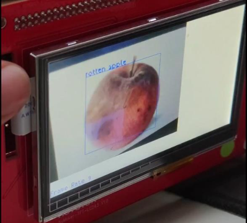
여러 YOLO 계열 모델을 비교한 뒤, 임베디드 장치에서 다루기 쉬운 YOLOX-Nano를 채택합니다. 비교 기준은 크게 모델 크기/추론 속도, 학습 효율, 응용 분야입니다.
| 비교 기준 | YOLOX-Nano | 기타 YOLO 모델 |
|---|---|---|
| 모델 크기/속도 | 약 0.91M 파라미터, 저연산 장치에 적합 | 대체로 더 크고 고성능 GPU에 유리 |
| 훈련 효율 | Anchor-free 구조로 파라미터 조정 부담이 적음 | YOLOv4/v5는 anchor 설정 부담이 큼 |
| 적용 분야 | 엣지 장치, 실시간 응용 | 서버급 분석, 더 높은 정확도 요구 환경 |
- YOLOX-Nano는 low-compute 환경에 맞게 최적화되어 M55M1 같은 보드에 적합합니다.
- Anchor-free 구조 덕분에 새 데이터셋 적응이 비교적 쉽습니다.
- 대형 모델은 정확도 여지는 높지만, 속도와 메모리 측면에서 본 프로젝트와 맞지 않습니다.
약 1000장의 이미지에 대해 LabelImg로 바운딩 박스를 생성하고, COCO annotation 파일을 Annotations 폴더에 저장해 후속 학습에 사용했다고 설명합니다. 즉 품질 인식 정확도는 라벨링 품질에 크게 좌우됩니다.
- pip install labelImg로 패키지를 설치합니다.
- labelImg 명령으로 실행합니다.
- Open으로 이미지 폴더를 엽니다.
- 우클릭 또는 메뉴에서 Create RectBox를 선택합니다.
- 사과 영역을 박스로 감쌉니다.
- 객체 이름을 입력합니다.
- 기존에 입력한 이름이 있으면 목록에서 재사용합니다.
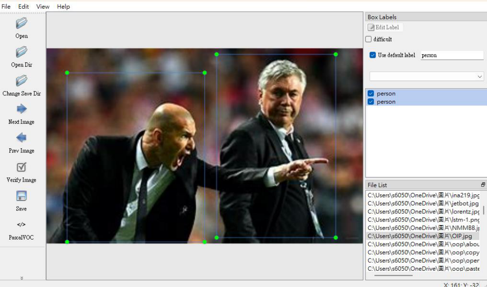

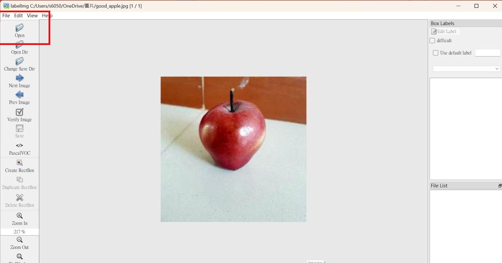
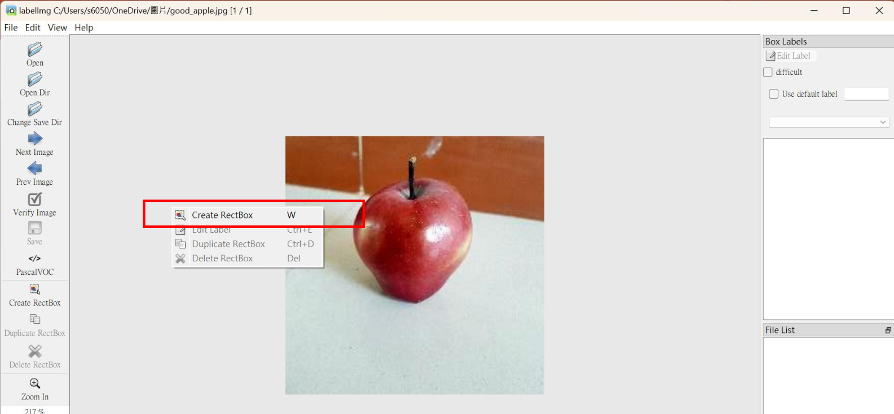
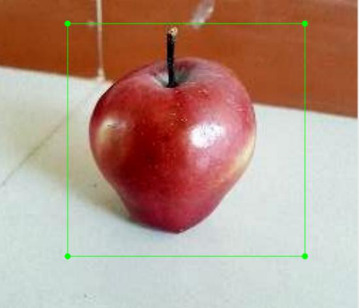
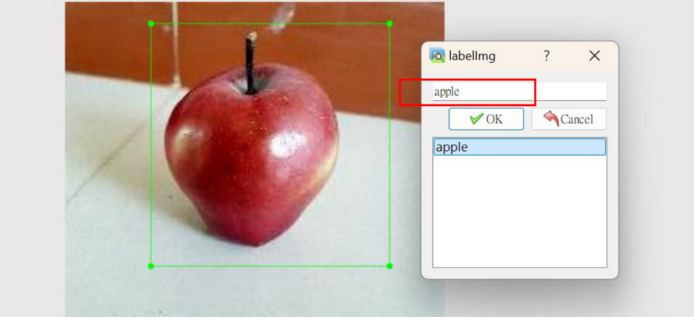
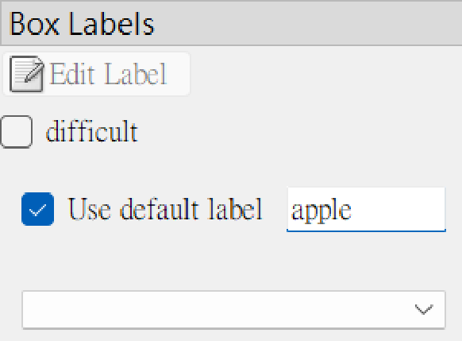
| 항목 | 값 |
|---|---|
| GPU | RTX 3060 Ti |
| CUDA | 11.8 |
| PyTorch | 2.0.0 |
| Epoch | 200 |
| Batch Size | 64 |
| 훈련 시간 | 1.5 hours |
LabelImg와 Kaggle을 함께 사용합니다. 즉 이미지 소스는 Kaggle에서 확보하고, 그 이미지를 LabelImg로 박싱한 뒤 COCO JSON으로 정리합니다. 사용 데이터셋은 Fruits fresh and rotten for classification입니다.
| 항목 | 내용 |
|---|---|
| 훈련 프레임워크 | PyTorch |
| 훈련 모델 | YOLOX-Nano |
| 데이터셋 | Fruits fresh and rotten for classification |
| 라벨링 방식 | LabelImg |
| 형식 | COCO JSON |
| Train / Valid | 630 / 296 |
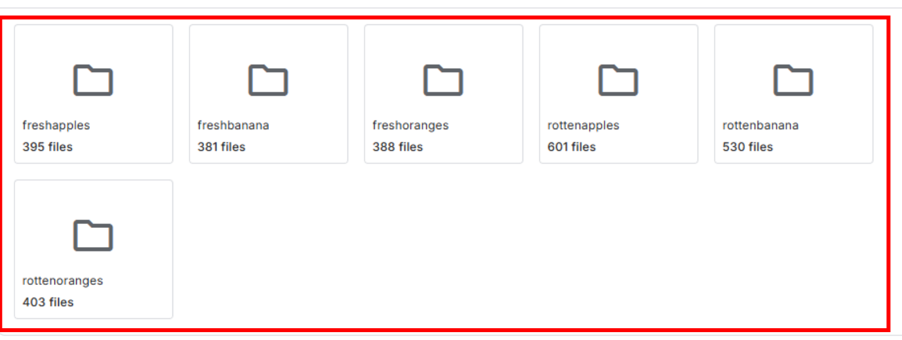
Python 3.10 기반 Anaconda 가상환경을 만들고, pip 업그레이드, CUDA 11.8 + torch 2.0 설치, MMCV 2.0.1, requirements, YOLOX 개발 모드 설치 순으로 진행합니다.
conda create --name yolox_nu python=3.10 conda activate yolox_nu python -m pip install --upgrade pip setuptools python -m pip install torch torchvision torchaudio --index-url https://download.pytorch.org/whl/cu118 python -m pip install mmcv==2.0.1 -f https://download.openmmlab.com/mmcv/dist/cu118/torch2.0/index.html python -m pip install --no-input -r requirements.txt python setup.py develop
학습 설정 파일은 exps/default/yolox_nano_ti_lite_nu.py입니다. 데이터셋은 아래 구조로 배치하고, 클래스 수와 경로, epoch 등을 실제 프로젝트에 맞게 수정한 뒤 훈련을 시작합니다.
Datasets/<your_datasets_name>/
annotations/
train_annotation_json_file
val_annotation_json_file
train2017/
train_img
val2017/
validation_img
python tools/train.py -f <MODEL_CONFIG_FILE> -d 1 -b <BATCH_SIZE> --fp16 -o -c <PRETRAIN_MODEL_PATH>

ONNX를 프레임워크 간 중간 포맷으로 소개합니다. 이후 calibration data를 만들어 TFLite quantization을 수행하고, 최종적으로 임베디드 장치에서 빠르게 실행 가능한 TensorFlow Lite 모델로 변환합니다.
python tools/export_onnx.py -f <MODEL_CONFIG_FILE> -c <TRAINED_PYTORCH_MODEL> --output-name <ONNX_MODEL_PATH> python demo/TFLite/generate_calib_data.py --img-size <IMG_SIZE> --n-img <NUMBER_IMG_FOR_CALI> -o <CALI_DATA_NPY_FILE> --img-dir <PATH_OF_TRAIN_IMAGE_DIR> onnx2tf -i <ONNX_MODEL_PATH> -oiqt -qcind images <CALI_DATA_NPY_FILE> "[[[[0,0,0]]]]" "[[[[1,1,1]]]]"
Vela는 Arm microNPU용 컴파일러로, 적절한 연산을 NPU에 배치하고 메모리 접근과 명령 흐름을 최적화합니다. 양자화 완료 모델을 vela\generated\에 둔 뒤 variables.bat를 수정하고 gen_model_cpp를 실행하라고 설명합니다.
set MODEL_SRC_FILE=<your tflite model> set MODEL_OPTIMISE_FILE=<output vela model> # output vela/generated/yolox_nano_ti_lite_nu_full_integer_quant_vela.tflite.cc
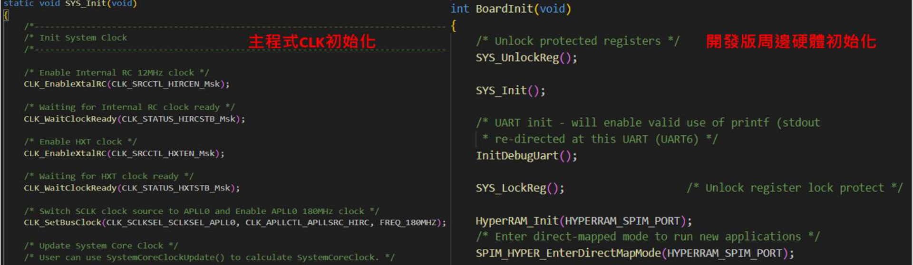
- System Initialization
- Capture Image
- Inference
- Post-Processing & Draw Results
- Display Results
BoardInit()는 하드웨어 관련 초기화를 수행합니다. 목적은 전체 시스템이 안정적인 클록, 통신, 메모리 환경 위에서 영상 처리와 신경망 추론을 수행하게 하는 것입니다.
- frame buffer 상태에 따라 사용할 버퍼를 찾습니다.
- get_empty_framebuf()는 새 영상을 저장할 빈 버퍼를 확보합니다.
- 이 단계가 있어야 캡처 중 기존 데이터를 덮어쓰지 않을 수 있습니다.
- get_full_framebuf()는 채워진 버퍼를 가져와 추론에 전달합니다.
- 사과 품질 인식 모델 추론 코드와 함수 선언이 별도 슬라이드로 설명됩니다.
- PresentInferenceResult()는 검출된 객체의 클래스와 위치를 정리합니다.
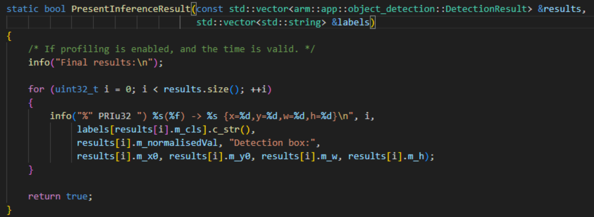
- 네트워크 출력 크기의 박스를 원본 이미지 좌표계로 재스케일링합니다.
- 출력 텐서에서 경계 상자와 클래스 확률을 추출합니다.
- NMS를 적용해 중복 박스를 제거합니다.
- 최종 결과는 resultsOut 같은 결과 컨테이너로 정리됩니다.
- InsertTopNDetection는 objectness 기준으로 상위 검출만 유지합니다.
- DetectionResult 구조체는 좌표, 크기, 클래스, 신뢰도를 보유합니다.
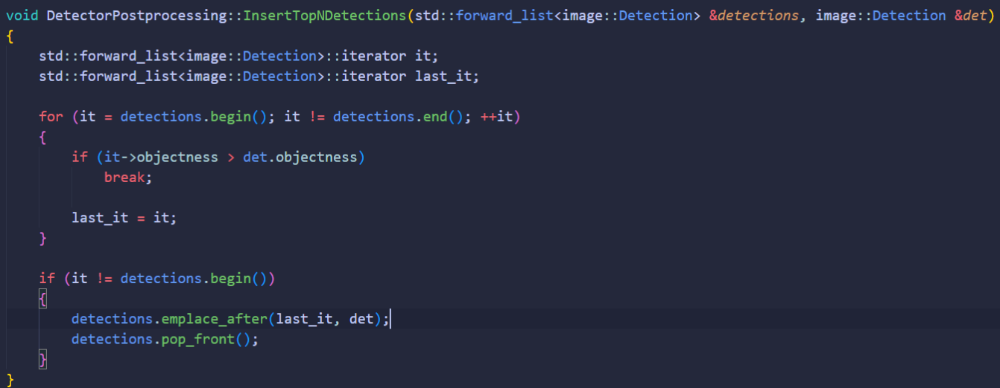
DrawImageDetectionBoxes()는 최종 검출 결과를 화면에 시각화합니다. 즉 검출 박스와 라벨을 이미지 위에 덧그려 LCD에 표시하는 마지막 단계입니다.
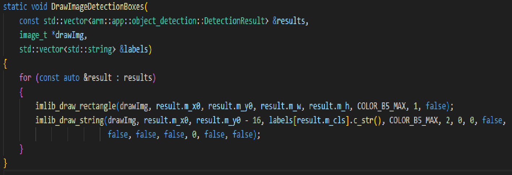
마지막 장은 DEMO 링크를 제공합니다. 이 문서는 사과 품질 인식 결과만 보여주는 문서가 아니라, 데이터 확보, 라벨링, 학습 환경 구축, 모델 변환, 보드 추론과 시각화까지 이어지는 완결형 예제입니다.
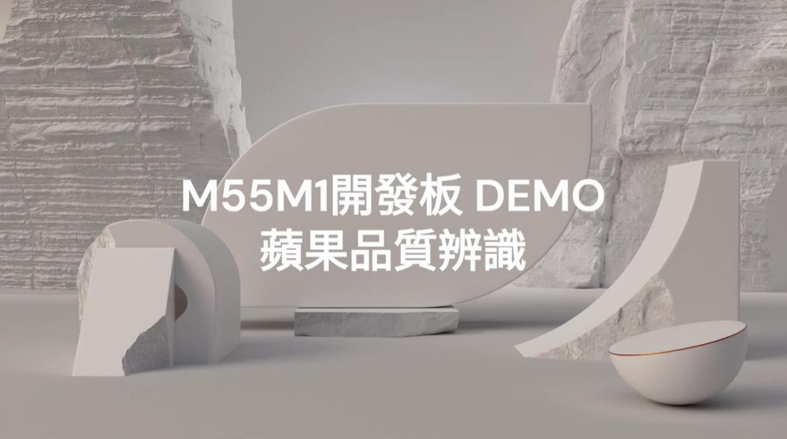